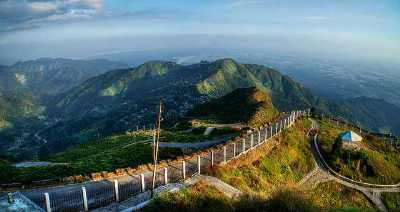
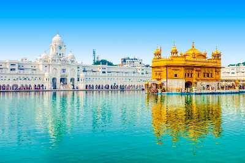

.jpg) Udaipur, also known as the City of Lakes, is the crown jewel of the state of Rajasthan. It is surrounded by the beautiful Aravalli Hills in all directions, making this city as lovely as it is. This 'Venice of the East' has an abundance of natural beauty, mesmerising temples and breathtaking architecture which makes it a must-visit destination in India. A boat ride through the serene waters of Lake Pichola will be enough to prove to you why Udaipur is the pride of Rajasthan.
Udaipur, also known as the City of Lakes, is the crown jewel of the state of Rajasthan. It is surrounded by the beautiful Aravalli Hills in all directions, making this city as lovely as it is. This 'Venice of the East' has an abundance of natural beauty, mesmerising temples and breathtaking architecture which makes it a must-visit destination in India. A boat ride through the serene waters of Lake Pichola will be enough to prove to you why Udaipur is the pride of Rajasthan.
Packages start from :- 5,228/-

Jaw-dropping locales, mesmerising sunrises, the untouched beauty of the hills, the old-world charm of the past, and the welcoming smiles of the local people all add up to make Darjeeling one of the most beautiful hill stations in Eastern part of India. Spread over a steep mountain ridge, nestled amidst acres of lush green tea plantations, Darjeeling stands at the height of 2,050 meters above sea level, thus boasting of cool climes all year round. This scenic hill station is the perfect getaway for a romantic honeymoon and is just around 700 kilometres away from Kolkata.
Packages start from :- 8,375/-
 The Blue Mountains have always been shrouded in mysticism, and Ooty is no exception to that. For every mountain lover, the very idea of travelling to the city known as the Queen of the Hills holds an allure like no other. Once regarded as the summer headquarters of the East India Company (and for a very good reason), Ooty, also known as Udagamandalam, is a hill station in Tamil Nadu which serves as a very popular tourist destination for anyone looking for a picturesque place to relax and unwind. Ooty is nestled amidst the Nilgiri hills at an altitude of 2,240 meters above sea level and enjoys a favourable climate all year round.
The Blue Mountains have always been shrouded in mysticism, and Ooty is no exception to that. For every mountain lover, the very idea of travelling to the city known as the Queen of the Hills holds an allure like no other. Once regarded as the summer headquarters of the East India Company (and for a very good reason), Ooty, also known as Udagamandalam, is a hill station in Tamil Nadu which serves as a very popular tourist destination for anyone looking for a picturesque place to relax and unwind. Ooty is nestled amidst the Nilgiri hills at an altitude of 2,240 meters above sea level and enjoys a favourable climate all year round.
Packages start from :- 6,000/-
Nestled in between the snow-capped slopes of the Pir Panjal and the Dhauladhar ranges, Manali is one of the most popular hill stations in the country. With jaw-dropping views, lush green forests, sprawling meadows carpeted with flowers, gushing blue streams, a perpetual fairy-tale like mist lingering in the air, and a persistent fragrance of pines and freshness - Manali has been blessed with extraordinary scenic beauty. From museums to temples, from quaint little hippie villages to bustling upscale streets, river adventures to trekking trails, Manali has ever a reason to be the tourist magnet it is, all year round.
Packages start from :- 6,250/-
Mcleodganj is a hill station near Dharamshala, popular among trekkers. Its culture is a beautiful blend of Tibetan with some British influence.
Packages start from :- 10,000/-
 Pondicherry, also known as Puducherry and commonly referred as just Pondy, is one of the seven Union Territories of India. is often famously referred to as the French Riviera of the East, and it is indeed one of the most charming and mesmerising places to visit in South India. Located in the state of Tamil Nadu, Pondicherry is a little town tucked away on the south-east coastline of India, and it is a destination that promises travellers sanctity and serenity, in the real sense of the terms.
Pondicherry, also known as Puducherry and commonly referred as just Pondy, is one of the seven Union Territories of India. is often famously referred to as the French Riviera of the East, and it is indeed one of the most charming and mesmerising places to visit in South India. Located in the state of Tamil Nadu, Pondicherry is a little town tucked away on the south-east coastline of India, and it is a destination that promises travellers sanctity and serenity, in the real sense of the terms.
Packages start from :- 6,768/-
 The very name Tirupati is enough to evoke strong spiritual feelings, and while the name God's Abode indeed does justice to the place, Tirupati has quite a few other tourist attractions as well that make it a city worth visiting. Situated in the Chittoor district of Andhra Pradesh, Tirupati is one of the most popular pilgrimage centres in the country. Home to many heritage sites, and a plethora of ancient temples and monuments, Tirupati is one of the oldest cities of India, and finds mention in plenty of ancient texts.
The very name Tirupati is enough to evoke strong spiritual feelings, and while the name God's Abode indeed does justice to the place, Tirupati has quite a few other tourist attractions as well that make it a city worth visiting. Situated in the Chittoor district of Andhra Pradesh, Tirupati is one of the most popular pilgrimage centres in the country. Home to many heritage sites, and a plethora of ancient temples and monuments, Tirupati is one of the oldest cities of India, and finds mention in plenty of ancient texts.
SEPETEMBER TO MARCH
The only hill station of Rajasthan, its cool atmosphere and lush green surroundings make it a major tourist spot within the state. The most important attraction, however, are undoubtedly the Dilwara temples, which is one of the most stunning piece of architecture in the country. If you are a history or architecture buff, this is one of the places you should absolutely not miss out in India.
Packages start from :- 5,207/-
Having evolved gradually from being the Garden City to the Silicon Valley of India, Bengaluru is the third largest and one of the most livable cities in India.
Packages start from :- 5,000/-
.jpg) The moment you set foot in Jaipur, you will feel like everything has come straight out of the pages of some epic novel. Majestic buildings, tales of heroic battles, resplendent forts and palaces, and multi-faceted characters ? Rajasthan is one of the most colourful and flashiest states in all of India, and its capital Jaipur lives up to the same reputation as well. Jaipur is a vibrant amalgamation of the old and the new ? highly urbanized pockets and shopping areas have casually sprung up beside gleaming forts and palaces. Jaipur has long been one of the shiniest cultural jewels in the history of the Indian subcontinent, and the royal corridors of the famously named 'Pink City' offer up a plethora of adventures and activities that make for a memorable holiday experience.
The moment you set foot in Jaipur, you will feel like everything has come straight out of the pages of some epic novel. Majestic buildings, tales of heroic battles, resplendent forts and palaces, and multi-faceted characters ? Rajasthan is one of the most colourful and flashiest states in all of India, and its capital Jaipur lives up to the same reputation as well. Jaipur is a vibrant amalgamation of the old and the new ? highly urbanized pockets and shopping areas have casually sprung up beside gleaming forts and palaces. Jaipur has long been one of the shiniest cultural jewels in the history of the Indian subcontinent, and the royal corridors of the famously named 'Pink City' offer up a plethora of adventures and activities that make for a memorable holiday experience.
Packages start from :- 2,568/-
 A city of kebabs and nawabs, of architecture and history, of literature and culture ? that is Lucknow in a nutshell for you. The capital and the largest city of Uttar Pradesh, Lucknow, situated on the banks of river Gomti, welcomes you with a heartwarming note of "Muskuraiyein, kyunki aap Lucknow mein hai". Known as the ?City of Nawabs?, Lucknow has a charm to it that is hard to resist. While the city itself is rich and opulent, the people of Lucknow also follow an endearing 'pehle aap' (you first) culture, which always leaves behind a smile on the faces of its visitors. From a slice of rich colonial history to modernized museums, the 'City of Nawabs' beautifully brings together the opulence of a glittering past and the simplicity of a modern city.
A city of kebabs and nawabs, of architecture and history, of literature and culture ? that is Lucknow in a nutshell for you. The capital and the largest city of Uttar Pradesh, Lucknow, situated on the banks of river Gomti, welcomes you with a heartwarming note of "Muskuraiyein, kyunki aap Lucknow mein hai". Known as the ?City of Nawabs?, Lucknow has a charm to it that is hard to resist. While the city itself is rich and opulent, the people of Lucknow also follow an endearing 'pehle aap' (you first) culture, which always leaves behind a smile on the faces of its visitors. From a slice of rich colonial history to modernized museums, the 'City of Nawabs' beautifully brings together the opulence of a glittering past and the simplicity of a modern city.
Packages start from :- 3,000/-
 Famously known as ?Heaven on Earth?, Srinagar is every bit the epitome of paradise on earth. As picturesque as the most stunning painting to ever be painted, Srinagar, the capital of Jammu and Kashmir, lies on the banks of the Jhelum river, and has a cool, pleasant climate all year round, contributing to the perpetual influx of tourists visiting this city which offers a plethora of gorgeous scenic vistas.
Famously known as ?Heaven on Earth?, Srinagar is every bit the epitome of paradise on earth. As picturesque as the most stunning painting to ever be painted, Srinagar, the capital of Jammu and Kashmir, lies on the banks of the Jhelum river, and has a cool, pleasant climate all year round, contributing to the perpetual influx of tourists visiting this city which offers a plethora of gorgeous scenic vistas.
Packages start from :- 4,524/-
Situated close to the Pakistan Border, Jaisalmer is a major tourist spot located in the northwestern state of Rajasthan in India. It is called the 'golden city' due to its bounteous golden dunes flowing in the Thar Desert. Jaisalmer is adorned with lakes, ornate Jain temples, havelis and castles clad in golden yellowish sandstone. Climb on to the camel saddle and make your way through this desert or camp under the night sky in this golden land for an unforgettable experience.
Packages start from :- 12,000/-
Situated on the south-west coast of India, Kochi or Cochin is a bustling commercial port city with a trading history that dates back to at least 600 years. Called as the Queen of the Arabian Sea, the city is the financial, commercial and industrial capital of Kerala
Packages start from :- 5,500/-
Hampi, the city of ruins, is a UNESCO World Heritage Site. Situated in the shadowed depth of hills and valleys in the state of Karnataka, this place is a historical delight for travellers. Surrounded by 500 ancient monuments, beautiful temples, bustling street markets, bastions, treasury building and captivating remains of Vijayanagar Empire, Hampi is a backpacker's delight. Hampi is an open museum with 100+ locations to explore and a favourite way to see the city from the perspective of its history.
Packages start from :- 3,000/-
Madurai is one of the oldest cities of India located in Tamil Nadu. It was ruled by Pandya kings for the longest time in its history and is constructed in the form of a lotus.
Packages start from :- 3,000/-
 Rameshwaram is one of the holiest places in India and is located on a beautiful island. It is separated by a small Pamban channel from Sri Lanka. According to the Hindu mythology, this is the place where Lord Rama created a bridge across the sea to Sri Lanka.
Rameshwaram is one of the holiest places in India and is located on a beautiful island. It is separated by a small Pamban channel from Sri Lanka. According to the Hindu mythology, this is the place where Lord Rama created a bridge across the sea to Sri Lanka.
Packages start from :- 11,200/-
 This is one of the best tiger reserves of the country, known to have "friendly" tigers and chances of sighting one here is reasonably better than many other tiger reserves of India. Along with this Ranthambore has one of the richest flora and fauna making it an absolutely must visit area
This is one of the best tiger reserves of the country, known to have "friendly" tigers and chances of sighting one here is reasonably better than many other tiger reserves of India. Along with this Ranthambore has one of the richest flora and fauna making it an absolutely must visit area
Packages start from :- 5,500/-

Home of the glorious Golden Temple, the iconic city of Amritsar, portrays the heroic character of the Punjab. A day in this peaceful city starts with the spiritual prayers from Gurudwaras. The original name of first the ancient lake, then of the temple complex, and later the surrounding city, meaning "pool of ambrosial nectar."
Packages start from :- 11,490/-
Our Team

Yash Khatod
Roll No. :- 19MCA011

Khushboo Jain
Roll No. :- 19MCA006
 Home
Package
Contact Us
About
Login
Home
Package
Contact Us
About
Login